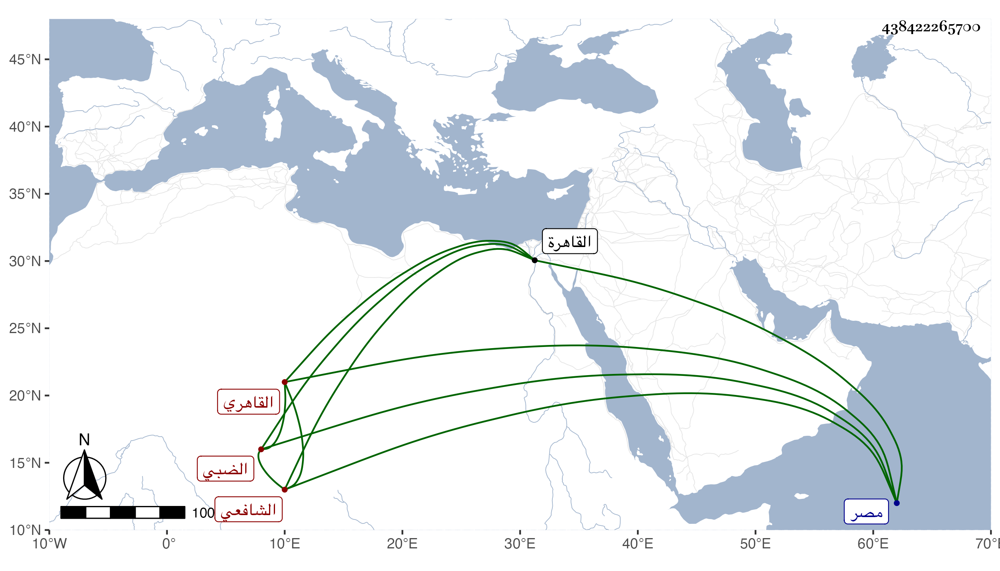

0902Sakhawi.DawLamic.ITO20230111-ara1.EIS1600.438422265700
Biography ID: 438422265700
328
محمد بن إسماعيل بن أحمد بن جلبان الشمس الضبي القاهري الشافعي ويعرف بالضبي . ذكره شيخنا في إنبائه فقال : صاحبنا الشيخ شمس الدين كان خطيبا بجامع يونس بالقرب من قنطرة السباع بين مصر والقاهرة دينا خيرا مقبلا على شأنه لازمني نحو ثلاثين سنة وكتب أكثر تصانيفي كأطراف المسند وما كمل من فتح الباري وهو أحد عشر سفرا والمشته ولسان الميزان وتخريج الرافعي وعدة كتب والأمالي وهي في قدر أربع مجلدات بخطه وكتب لنفسه من تصانيف غيري ، واشتغل بالعربية ولكن له نهمة في غير الكتابة مع التقلل من الدنيا والتقنع باليسير والصبر وقلة الكلام . مات في يوم الثلاثاء ثاني عشر رمضان سنة أربعين وكثر الثناء عليه من جيرانه وتأسفوا عليه رحمه الله .
